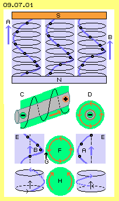
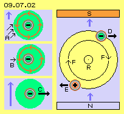
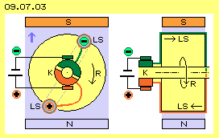
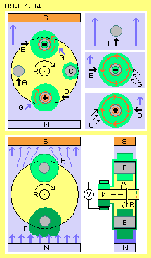
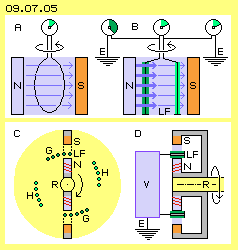
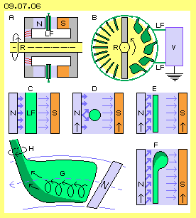

Diagonaler Schub
In Bild 09.07.01 sind oben nochmals drei ´Magnetfeldlinien´ zwischen dem Nordpol (N, blau) und dem Südpol (S, rot) eingezeichnet. Die übereinander befindlichen Ätherpunkte (schwarz) sind auf ihren Kreisbahnen jeweils ´zeitlich versetzt´. Die vertikale Verbindungslinie dieser Ätherpunkte bildet eine Spirale (dicke blaue Kurve).
Hier nun sind auch die Ätherpunkte seitlich in den drei Säulen gegeneinander versetzt. Von links nach rechts ergeben sich damit die nacheinander folgenden Situationen. Hier ist z.B. am linken Rand durch den blauen Pfeil A markiert, wie diese Kante scheinbar nach oben ´rutscht´. Auch am rechten Rand ist durch Pfeil B markiert, wie diese ´Welle´ nach oben läuft. Real findet immer nur die kreisende Bewegung statt, dennoch ergibt die zeitliche Abfolge einen diagonal aufwärts gerichteten Schub. Jede Magnetfeldlinie wirkt wie eine ´spiralig-drehende Strömung´ vom Nord- zum Südpol.

Linksdrehender Strom
In der zweiten Zeile dieses Bildes ist bei C ein Leiterdraht (grau) gezeichnet. Entlang diesem fließt von links nach rechts ein Strom (also von Minus nach Plus, siehe roter Pfeil). Jeder Strom ist umgeben von einem Magnetfeld (hellgrün), das nach links weist (immer in Richtung des Stromes gesehen). Auch um den stromführenden Leiter herum ergibt sich also eine spiralig nach vorn gerichtete Bewegung.
Rechts im Bild bei D ist schematisch ein Querschnitt durch den Leiter gezeichnet. Um den Draht (grau) fließt der Strom in einer dünnen, ringförmigen Schicht (rot). Über dieser ragt rundum das magnetische Feld (hellgrün) weit in den Raum hinaus. Mit Blick auf das Minus-Ende des Drahtes ist das Magnetfeld linksdrehend (siehe rote Pfeile).
Strom durch das Magnetfeld
In der dritten Zeile bei E ist nun eine Situation dargestellt, bei welcher dieser stromführende Leiter quer durch das magnetische Feld führt, hier von vorn nach hinten. Dieser Draht ist für das Magnetfeld ein ´störender Fremdkörper´. Die Ätherbewegungen der blauen Magnetfeldlinien kollidieren mit den Bewegungen des hellgrünen Magnetfelds F. Von Bedeutung sind besonders die Magnetfeldlinien, die an der linken und rechten Seite dieses Fremdkörpers vorbei ´schrammen´.
Auf der rechten Seite ist die obige Kante A eingezeichnet, die sich dort nach oben ´schraubt´. Diese Seite ist relativ unproblematisch, weil dort beide Bewegungen aufwärts gerichtet sind (siehe blauer Pfeil A und dortiger roter Pfeil F). Auf der linken Seite kommt die obige Kante B in Berührung mit dem hellgrünen Magnetfeld. Diese Seite ist problematisch, weil dort die Abwärts-Bewegung um den Leiter (roter Pfeil) gegen die Aufwärts-Bewegung der Magnetfeldlinie (blauer Pfeil) gerichtet ist. Dort erfährt das Magnetfeld des Leiters einen Gegendruck (G, schwarzer Pfeil).
Auch ein rein mechanischer Vergleich kann diesen Prozess verdeutlichen. Beide Magnetfeldlinien kann man sich als Gewindestangen (blau) vorstellen, beide links-drehend um vertikale Achsen, wie im Bild ganz unten links und rechts skizziert ist. Das Magnetfeld des Stromes ist dann vergleichbar mit einem Zahnrad (H, hellgrün) mit horizontaler Achse. Dessen Zähne könnten so geformt sein, dass es durch die rechte Gewindestange in die notwendige Links-Drehung des Stromes versetzt wird. Diese Verzahnung stimmt dann aber nicht mehr mit den notwendigen Bewegungen der linken Seite überein. Dort gäbe es ´Getriebeschaden´ bzw. real ergibt sich dort Stress im Äther.
Seitliches Ausweichen

In Bild 09.07.02 ist oben links bei A ist noch einmal die Situation des stromführenden Leiters in einem Magnetfeld dargestellt. Der vorige Gegendruck ist hier durch drei schwarze Pfeile angezeigt. Wie oben schon diskutiert wurde, sind die Magnetfeldlinien zwischen den Polflächen des Nord- und Südpols ´ortsfest´ gebunden und damit relativ ´steif´. Wenn dieses Bewegungsmuster zur Seite ausweichen würde, ergäbe die Beule eine größere Oberfläche zum Freien Äther hin. Dessen allgemeiner Äther-Druck schiebt die Magnetfeldlinien dorthin, wo für sie der kürzeste Weg zwischen den Polen gegeben ist.
Das Magnetfeld um den Leiter ist beweglicher, weil es ohnehin am Leiter entlang vorwärts gleitet. Der Gegendruck A erfährt darum weniger Widerstand, wenn er dieses Magnetfeld etwas eindrückt, wie durch Pfeil B markiert ist. Dieses Feld ist nun nicht mehr konzentrisch zum Draht, so dass darin Verspannungen aufkommen. Wenn der Draht beweglich ist, wird dieser nun nach rechts gedrückt, wie durch den Pfeil C angezeigt ist. Das ist die Ursache und der Prozess, warum und wie ein stromführender Leiter in einem homogenen Magnetfeld die ´Lorentz-Kraft´ als seitlichen Schub erfährt.
In diesem Bild rechts ist im Querschnitt ein Rotor (R, gelb) dargestellt. Oben bei D ist ein Leiter eingezeichnet, auf dem Strom von vorn nach hinten fließt. Die Lorentz-Kraft schiebt diesen Draht nach rechts. Unten bei E ist ein Leiter eingezeichnet, auf dem Strom entgegen gesetzt fließt, also von hinten nach vorn. Sein umgebendes Magnetfeld ist aus dieser Sicht rechtsdrehend und die Lorentz-Kraft drückt diesen Draht nach links. Beide Schubkräfte (siehe schwarze Pfeile) ergeben ein Drehmoment an diesem Rotor. Allerdings wirkt dieser Schub nur jeweils einen Halbkreis lang, wie durch die Pfeile F angezeigt ist.
Gleichstrom-Motor

Um ein fortgesetztes Drehen zu erreichen, muss die Stromrichtung periodisch wechseln. Das Prinzip dieses Gleichstrom-Motors ist in Bild 09.07.03 dargestellt, links in einem Querschnitt und rechts im Längsschnitt durch den Rotor (R, gelb). Vorige Drähte sind im Hintergrund miteinander verbunden und bilden eine Leiter-Schleife (LS). Der obere Abschnitt des Leiters ist grün markiert. Dort fließt der Strom von vorn nach hinten, im Längsschnitt von links nach rechts. Der untere Abschnitt ist rot markiert und dort fließt der Strom von hinten nach vorn, im Längsschnitt von rechts nach links (siehe Pfeile). Es können auch viele Schleifen angelegt werden und eine Spule bilden.
Der Wechsel der Stromrichtung erfolgt durch einen ´Kommutator´ (K). Dieser besteht aus zwei Halbkreisen (grün und rot markiert), die jeweils mit obigen Drähten verbunden sind (aber gegeneinander und gegen die Welle isoliert sind). Über Schleifkontakte (z.B. in Form von Kohlebürsten) wird der Strom von / zu einer Gleichstrom-Quelle geleitet. Hier wird der Gleichstrom immer zum momentan oben befindlichen Leiter-Abschnitt geführt und über den jeweils unten befindlichen Abschnitt zurück geleitet.
In Lehrbüchern ist dazu beispielsweise zu lesen: " Eine Drahtschleife im Magnetfeld erfährt ein Lorentz-Kraft-Paar und es entsteht ein mechanisches Drehmoment M = ... Das Drehmoment versucht die Drahtschleife so auszurichten, dass ihre Flächennormale parallel zu B ist. Das ist die Grundlage des Elektromotors". Das weiß jeder und jeder kennt das einfache Modell eines Elektromotors. Real arbeiten nach diesem Prinzip aber nur Klein-Motoren, während alle leistungsfähigen Geräte nach einem anderen Prinzip funktionieren (siehe folgende Kapitel). Nichtsdestotrotz gibt es diese Lorentz-Kraft, die ´wundersam´ ist und bislang blieb. Erst mit vorigen Überlegungen auf Basis eines realen Äthers ergibt sich eine logische Erklärung.
Umkehrschluss
Oftmals ist ebenso pauschal zu lesen: "ein Generator arbeitet nach gleichem Prinzip wie ein Motor, nur in umgekehrter Wirkrichtung". Hier würde das bedeuten, dass voriges Gerät elektrischen Strom generieren müsste, wenn der Rotor mechanisch angetrieben wird. Dieser Sachverhalt wird in Bild 09.07.04 untersucht. Oben links im Bild ist wieder ein homogenes Magnetfeld (hellblau) vom Nordpol (N, blau) zum Südpol (S, rot) dargestellt. Darin dreht ein Rotor (R, gelb) im Uhrzeigersinn. Auf dem Rotor ist ein Leiter (grau) in vier Positionen während der Drehung eingezeichnet. Rechts oben im Bild sind drei Situationen detailliert gezeichnet.
Bei A bewegt sich der Leiter im Magnetfeld aufwärts. Nach gängiger Ansicht ergibt sich dabei keine Interaktion. Die Ätherpunkte schwingen auf ihren jeweiligen Ebenen und Kreisbahnen. Sie durchdringen auch das Kupfer-Material des Leiters. Der Äther um den Leiter bewegt sich nur hin und her, ohne um diesen eine drehende Schicht zu bilden.
Kein Strom

Ganz anders ist die Situation, wenn der Leiter die Magnetfeldlinien quer durchschneidet, wie bei B durch den Pfeil angezeigt ist. Es ergibt sich ein Gegendruck (G, siehe Pfeile) auf der rechten Seite, welche den Äther um den Leiter in eine Linksdrehung zwingt, wie es einem Strom von vorn nach hinten entsprechen würde. Leider kommen dort aber die Ätherpunkte des Magnetfeldes von hinten nach vorn. Die spiralige Verbindungslinie bzw. vorige ´Gewindestange´ drücken die Ätherbewegung zwar aufwärts, aber nach vorn gerichtet. Es kommt damit kein Fließen zustande.
Das Vorrücken des Leiters führt zu einem Druck auf die Magnetfeldlinie. Zum Abbau dieser Spannung ergibt sich eine Verwirbelung ohne klar gerichtete Struktur. Diese Wirbel können sich wieder beruhigen, wenn der Leiter bei C abwärts geführt wird, also parallel zu den Magnetfeldlinien und somit ohne Interaktion.
Bei D kreuzt der Leiter die Magnetfeldlinien in entgegen gesetzter Richtung. Es kommt nun links ein Gegendruck (G, siehe Pfeile) auf, welcher eine Rechtsdrehung des Äthers um den Leiter erzwingt. Ein entsprechender Strom müsste also von hinten nach vorn fließen. An dieser Kante wird aber der Äther nach hinten gedrückt. Somit kann in dieser Anordnung kein gerichteter Strom aufkommen - nur zeitweilige Verwirbelungen.
Induzierte Spannung
Unten in diesem Bild 09.07.04 ist die Konstruktion obigen Gleichstrom-Motors noch einmal dargestellt, links im Querschnitt und rechts im Längsschnitt. Der Rotor (R, gelb) ist rechts-drehend, wird hier aber mechanisch angetrieben. Auf dem Rotor ist wiederum eine Leiterschleife vorhanden, wovon sich ein Abschnitt E momentan unten und ein Abschnitt F oben befinden. Eine feste Verbindung besteht wieder zwischen den Drähten der Leiterschleife (oder einer Spule) mit den zwei Halbkreisen (hellgrün und dunkelgrün) eines Kommutators K. Über Schleifkontakte sind diese mit einem Voltmeter V leitend verbunden.
Aus vielen ´klassischen´ Experimenten wurde das ´Gesetz zur elektromagnetischen Induktion´ formuliert, wobei im diesem Fall folgende Aussage gilt: "Dreht man eine Spule innerhalb eines permanenten Magnetfeldes, so beobachtet man das Erscheinen und Verschwinden einer induzierten Spannung, zwei mal je Umdrehung." Dieses Voltmeter schlägt also zwei mal aus während einer Umdrehung des Rotors bzw. der Leiterschleife im Magnetfeld. Das ist ´geltendes Gesetz´ - auch wenn man nicht weiß, warum diese Wirkung tatsächlich zustande kommt.
Asymmetrien
Voriger Gleichstrom-Motor liefert also mechanisches Drehmoment, wenn Strom eingespeist wird. Wenn aber die gleiche Maschine mechanisch angetrieben wird, erzeugt sie keinen Strom - sondern nur Spannung. Spannung ist ein ´Potential´, welches der Differenz von Ladungs-Stärken entspricht. Seltsamer Weise erzeugt dieses Gerät also Ladungen unterschiedlicher Stärke in den beiden Abschnitten der Leiterschleife. Aus Sicht des Äthers und vorigen Überlegungen gibt es zwei Ursachen für dieses ´Phänomen´: die Differenz zwischen Nord- und Südpol sowie das nicht homogene Magnetfeld.
Wie oben schon angesprochen wurde, sind die Magnetfeldlinien an der Oberfläche des Nordpols stark fixiert an ihrer Quelle. Die interne Ätherbewegung muss genau an ihrem Ort als spiraliges Bewegungsmuster in die Umgebung austreten, in ihrer originären Form. In diesem Bild ist das durch dicke blaue Pfeile über dem Nordpol markiert. Wenn dicht entlang dieser Oberfläche ein ´störender Fremdkörper´ vorbei geführt wird, ergeben sich heftige Verwirbelungen im Äther um diesen Leiter. Diese ´Ladung in Form starker Äther-Wirbel´ ist bei E als dunkelgrüne Fläche markiert.
An der Oberfläche des Südpols ist ein weit geringerer Zwang beim ´Einsaugen´ passender Bewegungsformen gegeben. Wie bei einer Windhose kann sich der ´Sog-Rüssel´ drehen und winden. Zudem sind die Magnetfeldlinien durch die Störungen über dem Nordpol nicht mehr in der exakten Bewegungsform. In diesem Bild ist das durch schwächere und gekrümmte blaue Pfeile unterhalb des Südpols markiert. Wenn der Leiterdraht diesen Bereich von weniger streng geordneten Bewegungen durchschneidet, werden rundum an seiner Oberfläche weniger Verwirbelungen anhaften. Diese geringe ´Ladung´ ist beim Leiter am Südpol durch die hellgrüne Fläche markiert.
Geringe Ladungs-Differenz
Es ist nach gängiger Lehre nicht zu erklären, woher diese Spannungsdifferenz kommen sollte. Es müssen Ladungsdifferenzen sein, aber es gibt hier keine Quelle für Ladungsträger. Diese Verwirbelungen sind auch nicht so geordnet, dass schon ein ´magnetisches Feld´ gegeben wäre. Es ist um den Leiter herum nur ganz normaler Äther. Als ´Ladung´ erscheint dieser nur wegen dieser aufgeprägten Verwirbelungen. Ein elektrischer Fluss wird daraus erst, wenn anschließend der Freie Äther mit seinem generellen Ätherdruck diese Anhäufung intensiver Bewegungen wieder zusammen drückt.
In beiden Abschnitten der Leiterschleife ist diese Wirbelschicht unterschiedlich dick. Also wird die hohe Ladungsdichte (dunkelgrün) hinüber gedrückt zur niedrigeren Ladungsdichte (hellgrün). Über den Draht (oder die Drähte einer Spule) an der hinteren Stirnseite des Rotors wird also ein Ladungs-Ausgleich statt finden. An der Vorderseite des Rotors drückt über den Kommutator nur die restliche Spannungsdifferenz auf das Voltmeter.
Es ist also zu vermuten, dass in der Leiterschleife sehr viel höhere Spannung erzeugt wird als am Voltmeter zu messen ist. Andererseits ist bei dieser Konzeption die Distanz zwischen Nord- und Südpol sehr weit und das Magnetfeld zu inhomogen für die Generierung geordneter Bewegungsmuster. Darum ist diese Konzeption nicht sehr leistungsfähig und wird kaum eingesetzt zur Erzeugung von Spannung.
Ladungs-Fänger
In Bild 09.07.05 ist oben links bei A die ´klassische´ Darstellung zum Induktionsgesetz für eine im Magnetfeld drehende Leiterschleife abgebildet. Solche Schleifen bzw. Spulen sind gängige Elemente zur Erklärung elektrischer ´Phänomene´ und Gesetzmäßigkeiten. Zudem arbeiten elektrische Geräte in aller Regel mit in sich geschlossenen Schaltkreisen. Darum können die folgenden Überlegungen vermutlich nur die eines unwissenden Laien sein (und ich weiß momentan wirklich nicht, ob das Folgende gängige Praxis oder total neu ist).
Klar aber dürfte sein, dass die Ladung nur in den Abschnitten einer Leiterschleife gebildet wird, die momentan entlang eines Pols (bevorzugt des Nordpols) vorbei geführt wird. Ladung erfordert aber keinen geschlossenen Kreislauf. Sie kann z.B. auch an der Oberfläche einer Metallkugel oder einer Kondensator-Platte (zwischen-) gespeichert werden, zu der nur ein Draht führt. Also ist die Verbindung zwischen beiden Abschnitten nicht erforderlich. Diese Verbindung ist sogar schädlich, weil dort ein ´nutzloser´ Ausgleich der Spannung statt findet.
Die Konsequenz daraus ist in diesem Bild oben rechts bei B skizziert. Der untere Teil der Schleife wurde abgeschnitten. Nur noch Draht-Enden ragen in das Magnetfeld (hellblau) zwischen Nord- und Südpol hinein. Damit diese Bauelemente genügend stabil sind, sollten sie als Metall-Stifte oder dünne Röhren ausgeführt sein. Diese neuen Elemente bezeichne ich als ´Ladungsfänger´ LF. Wie vorige Schleife drehen beide Stifte im Magnetfeld. Wenn momentan ein Stift vor dem Nordpol vorbei geführt wird, erhält er viel Ladung (dunkelgrün). Der andere Stift läuft zur gleichen Zeit entlang des Südpols und erhält nur geringere Ladung (hellgrün).
Wenn beide Stifte mit einem Voltmeter verbunden sind, wird eine Spannung angezeigt. Weil jetzt kein Ausgleich zwischen den Stiften möglich ist, wird diese Spannung höher sein als bei der ´klassischen´ Draht-Schleife bei vorigem A. Ganz oben rechts ist ein Voltmeter zwischen dem rechten Stift und der Erde E geschaltet. Gegenüber deren ´Normal-Ladung´ wird eine geringe Spannung angezeigt, weil auch der rechte Stift durch das Magnetfeld etwas beaufschlagt wurde. Die ganze Mächtigkeit der Ladungs-Generierung wird aber das Voltmeter zwischen dem linken Ladungsfänger (dunkelgrün) und der Erde anzeigen.
Ladungs-Generator

Wenn Schleifen oder Spulen in einem rotierenden System eingesetzt werden, gibt es immer zwei mal Überschneidungen mit einem Magnetfeld und damit alternierenden Strom. Diese ´ein-armigen´ Ladungsfänger schneiden das Magnetfeld ebenso, aber die Ladung kann immer nur in eine Richtung abfließen, so dass fortwährend Gleichstrom produziert wird. Unten in Bild 09.07.05 ist eine entsprechende Konzeption schematisch skizziert, links wieder im Querschnitt und rechts im Längsschnitt. Es ist dabei die generell vorteilhaftere Variante gewählt, bei welcher die stromführenden Leiter ortsfest in einem Stator angeordnet und die Magnete auf einem Rotor installiert sind.
Auf der Rotorwelle (R, gelb) sind (in diesem Beispiel) zwei Hufeisen-Magnete installiert. Der Nordpol (N, hellblau) befindet sich innen, der Südpol (S, rot) außen. Der Magnet kann durch eine Spule erregt werden, die per Gleichstrom versorgt wird (nach gängiger Technik, hier nicht dargestellt). Dieser Strom fließt immer in gleiche Richtung. Im Eisenkern des Magnetes findet keine Umpolung statt. Es ergibt sich praktisch eine permanente Magnetisierung. Die Stärke des Magnetfeldes zwischen den Polen wird nur durch kurze Strom-Impulse intensiviert.
Der Rotor besteht in diesem Beispiel also nur aus einem Querbalken mit den beiden Magneten. Es können natürlich auch mehr Magnet-Balken installiert werden. Zwischen den Magneten sollte aber genügend Abstand bleiben. Die gelbe Fläche links im Querschnitt stellt also keine Rotor-Scheibe dar, sondern markiert nur den Drehbereich der Magnet-Balken.
In den Spalt zwischen Nord- und Südpol ragen von der Seite her die Ladungsfänger (LF, grün) hinein. Hier sind als Beispiel jeweils fünf Stifte zu vier Einheiten gruppiert. Während der Drehung des Rotors durchqueren die Magnetfelder diese Ladungsfänger. Der Abstand zwischen den Oberflächen des Nord- und Südpols ist gering. Es kann also eine starke Verwirbelung an den Oberflächen der Ladungsfänger erreicht werden.
Stromfluss per Ätherdruck
Wichtig ist nun der Freiraum bis zur nächsten Gruppe von Ladungsfängern. Einerseits kann sich in dieser Zeit das Magnetfeld beruhigen und ordnen, bevor es kurz vor den nächsten Ladungsfängern durch einen Strom-Impuls nochmals verstärkt wird. Andererseits sind dieser Raum und Zeitabschnitt notwendig, um den Freien Äther nutzbringend arbeiten zu lassen.
Die Ladung besteht aus mehr oder weniger geordneten Äther-Wirbeln rund um die Oberflächen der Stifte. Gegen diese ´großräumige Unordnung´ steht das kleinräumige Zittern des Freien Äthers. Der daraus resultierende generelle Ätherdruck will die ´Störung beseitigen´. Er drückt diese Wirbel an den Leiter und entlang des Leiters, bis ein Ausgleich der Ladungs-Stärken erreicht ist. Dabei gilt das Gesetz ´in-Fahrtrichtung-links´. Die zunächst ungeordneten Wirbel werden in ein geordnetes linksdrehendes Magnetfeld um den nun stromführenden Leiter transformiert.
In vorigem Längsschnitt ist nur schematisch angezeigt, dass dieser Gleichstrom einem Verbraucher (V, blau) zugeführt und letztlich in die Erde (E) abgeführt wird. Wann immer ein Magnetfeld über eine Gruppe Ladungsfänger hinweg streicht, ergibt sich ein Strom-Impuls. Die pulsierenden Gleichströme können aufbereitet werden in zweckdienlicher Weise nach gängiger Technik, z.B. in Form von Wechselstrom. Und natürlich kann eine beliebige Zahl Magnete und Ladungsfänger in dieser Maschine angeordnet werden, z.B. um Drehstrom zu generieren.
Strömungsgünstige Form
Die vorigen Maschinen erzeugen also zunächst nur Ladung, die erst in einem zweiten Schritt zu Strom wird. Es wäre natürlich wünschenswert, wenn sofort ein Fließen elektrischen Stromes machbar wäre. In Bild 09.07.06 wird diese Frage analysiert.
Oben links bei A ist eine alternative Anordnung dargestellt. Um die Welle des Rotors (R, gelb) sind die Hufeisen-Magnete so installiert, dass der Spalt zwischen dem Nordpol (N, blau) und dem Südpol (S, rot) nach außen offen ist. Die Ladungsfänger (LF, grün) ragen von außen in den Spalt zwischen den Polen. Bei B ist der Schwenkbereich der Magnete wieder gelb markiert. In der linken Hälfte dieser Fläche ragen diverse grüne Stifte in radialer Richtung in den Spalt hinein. Die Verbindung zum Verbraucher (V, blau) ist hier nur ´symbolisch´ angedeutet.

Bei C ist diese Anordnung in etwas größerem Maßstab gezeichnet. Vom Nordpol gehen starke Magnetfeldlinien aus (markiert durch dicke blaue Pfeile). Der Stift (LF, grün) sollte also nah an dieser Oberfläche sein, während der Abstand zum Südpol größer sein kann. Bei D ist diese Situation im Querschnitt skizziert. Durch Pfeile ist angezeigt, dass die Pole sich relativ zu den ortsfesten Ladungsträgern bewegen (hier nach oben). Es ist auch ein Problem angezeigt, indem die Magnetfeldlinien an einem runden Stift zu beiden Seiten ´abrutschen´ können. Dort wird dann nur eine ungeordnete Verwirbelung erreicht, wie oben schon angesprochen wurde.
Bei E ist anstelle des runden Stiftes eine plane Fläche eingezeichnet. Dort kann das Magnetfeld besser geordnete Ladungs-Wirbel an die Leiter-Oberfläche ´heften´. Man kann sich die linksdrehende Bewegung des Magnetfeldes wie eine ´Schwabbel-Scheibe´ vorstellen. Während diese am Ladungsfänger vorbei zieht, hinterlässt sie ein ´girlandenförmiges´ Bewegungsmuster auf der Oberfläche. Durch nachfolgende Magnetfeldlinien wird dieses Muster nach vorn geschoben, wie durch die schrägen blauen Pfeile angezeigt ist. Nur die Vorderseite (zum Nordpol weisend) ist von Bedeutung. Auf der Rückseite (zum Südpol hin) werden die nun ´gestörten´ Magnetfeldlinien nur kleinere Wirbel erzeugen.
Wenn ein elektrischer Strom letztlich entlang eines runden Leiters fließen soll, muss das zugehörige Äther-Umfeld linksdrehend sein. Vorige Strömung entlang der planen Fläche muss also in eine Linksdrehung überführt werden. Dazu ist bei F dieser Ladungsfänger vorn durch einen Rundung ergänzt. Die Magnetfeldlinien weisen einen Schub auf, der sich spiralig vom Nord- zum Südpol ´schraubt´. Diese Bewegung drückt die aufgetragene Ladung um diese Rundung herum.
Bei G ist eine seitliche Sicht auf diesen Ladungsfänger dargestellt. Die plane Fläche ist hellgrün und die Bereiche der Rundung sind dunkelgrün markiert. Sie gehen letztlich über in einen runden Leiter H, der etwas schräg nach vorn (im Drehsinn des Rotors) weist. Daraus ergibt sich die Form eines Golfschlägers. Oben rechts bei B sind z.B. fünf solcher Ladungsfänger eingezeichnet (also alternativ zur dortigen linken Seite). Die neue Form ergibt sich aus dem einfachen Stift, wenn dieser etwas nach vorn geneigt und unten etwas zurück gebogen wird. Zudem ist der Stift nun ergänzt um ein ´Fähnchen´ in Form der planen Fläche.
Unten links in diesem Bild ist die Oberfläche des Nordpols (N, blau) eingezeichnet und seine Bahn ist durch blaue gestrichelte Kreisbogen markiert. Hier ist nun auch diese ´girlandenförmige Spur´ skizziert, welche aus den Kreis-Bewegungen und der Vorwärts-Bewegung einer Magnetfeldlinie resultiert. Es ergibt sich dabei eine vorwärts-schlagende Komponente, wie durch die Pfeile hervor gehoben ist. Die Fläche des Magnets sollte in radialer Richtung lang gestreckt und etwas schräg gestellt sein. Damit wird dieser diagonal nach oben gerichtete Schub verstärkt. Letztlich wird die Ladung linksdrehend in den Leiter H gedrückt (siehe Pfeile). Sobald der Magnet diesen Ladungsfänger passiert hat, setzt wieder die Arbeit des Freien Äthers ein, indem die aufgetürmten und bereits linksdrehenden Äther-Wirbel zusammen gedrückt und entlang des Leiters vorwärts geschoben werden.
Strom-Generator
Es mag manchem Leser seltsam erscheinen, dass im Zusammenhang mit elektrischem Strom die Formgebung von Bauteilen von Bedeutung sein soll. Ein Vergleich mit Fluid-Technologie mag dazu hilfreich sein. Die Partikel der Luft bewegen sich aufgrund molekularer Bewegung in chaotischer Weise. Es ist eine gewisse Kraft erforderlich, um z.B. ein Flugzeug vorwärts durch die Luft zu schieben. Allein aufgrund der Formgebung der Tragflächen werden Strömungen organisiert, die letztlich eine sehr viel größere Kraft in Form des Auftriebs ergeben (bei Interesse nachzulesen in Kapitel 05.04. ´Auftrieb an Tragflächen´).
Hier gibt es bereits eine geordnete Strömung in Form der linksdrehenden Magnetfeldlinien (die bei Permanentmagneten praktisch ´kostenlos´ verfügbar ist oder nur geringe Strom-Impulse erfordern). Zudem muss der Rotor in Bewegung gehalten werden. Die Antriebskräfte sind praktisch nur zur Überwindung mechanischer Reibung notwendig (weil es hier keine Rückhaltekräfte gibt). Aus der Kombination beider Bewegungen ergibt sich ein ´Schwingen-mit-Schlag´ (siehe frühere Kapitel). Dieses muss geschwenkt und gewendelt werden, was entlang entsprechend geformter Oberflächen möglich ist (praktisch ´kostenlos´ wie bei Fluid-Strömungen, hier bewirkt durch den generellen Ätherdruck). Letztlich resultiert daraus ein linksdrehendes Feld im Raum um den Leiter und das so generierte Magnetfeld bewirkt unmittelbar an der Leiter-Oberfläche das Fließen des elektrischen Stroms. Die Stärke dieser Ströme ist abhängig von der Bauart der Maschine, z.B. hinsichtlich der Anzahl der Ladungsfänger und Magnete sowie der Drehgeschwindigkeit des Rotors.
Die oben diskutierte Lorentz-Kraft ist zweifellos gegeben, in der Elektro-Technik aber nur tauglich für ´Spielzeug-Motoren´. Wenn Leiterschleifen in einem Magnetfeld gedreht werden, gelten ebenso zweifelsfrei die Gesetze der Induktion. Die vorige Konzeption weist einige Merkmale auf für eine möglichst wirkungsvolle Umsetzung der Effekte. Möglicherweise resultieren daraus nicht nur ´Spielzeug-Generatoren´ zur Erzeugung elektrischen Stromes.